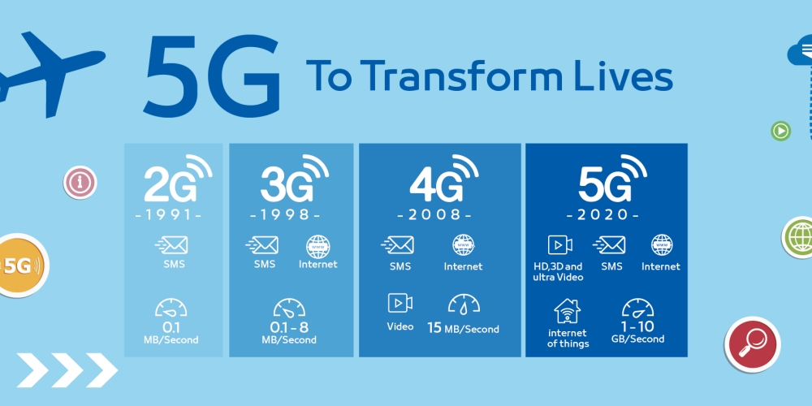
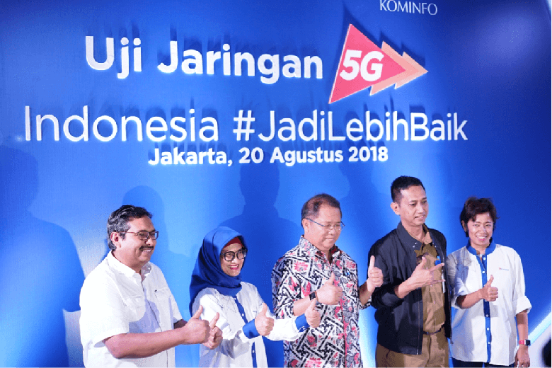
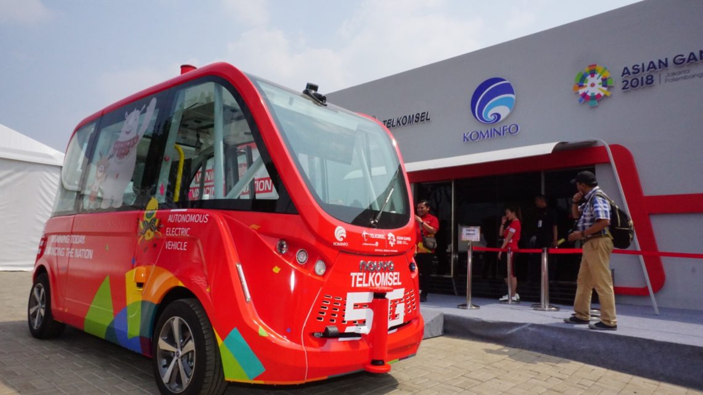

Presentation created by Irham Dzuhri, Powered by Reveal.js
5G Network
Sebuah istilah yang digunakan untuk menyebut generasi kelima sebagai fase berikutnya dari standar telekomunikasi seluler melebihi standar 4G.
5G Standars
5G NR (NEW RADIO)
Transformation
Generasi kedua (2G)
Kecepatan:
Up to 0,1 MB/SecKemampuan :
Telfon, SMS, Voice Mail dan transfer data dengan kecepatan maksimal 9.600 bps (bit per second).Generasi Ketiga (3G)
Kecepatan:
Up to 0,1 - 8 MB/SecKemampuan :
Memiliki kecepatan transfer data cepat (144kbps-2Mbps), internet, video on demand, music on demand, games on demand , video conference dan video streaming.Generasi Keempat (4G)
Kecepatan:
Up to 15 MB/SecKemampuan :
internet, video call, dan Teknologi LTE menawarkan kecepatan downlink hingga 300 Mbps dan Uplink 75 MbpsGenerasi Kelima (5G)
Kecepatan:
Up to 1 - 10 GB/SecKemampuan :
Ultra-HD Video, 3D Video, Smart Home, kecepatan transfer data rate 20x lebih cepat dari 4G LTE dan Hemat Baterai.

Notes
- Kecepatan 10x lebih cepat dari 4G
- Kapasitas 100x lebih besar dari 4G
- Response Time 0.01 ms
- Network Slicing
- Problem yang paling signifikan ialah biaya infrastruktur
5G di indonesia
 20 Agustus 2018, 2018, XL Axiata bekerja sama dengan Nokia pertama kalinya di indonesia mencoba teknologi jaringan generasi kelima (5G) di Kota tua.5G di indonesia
 Pada saat acara Asian Games 2018, Telkomsel bekerja sama dengan Pemerintah Indonesia & Divisi Telekomunikasi serta KT.Group dari Korea Selatan Juga melakukan percobaan jaringan generasi kelima (5G) di Indonesia bertempat di Stadion Gelora Bung Karno, Jakarta5G for business
- Business Industry 4.0
- Internet Of Things (smart city, smart home , dll)
- Artificial Intelligence
When it release?
Teknologi generasi kelima ini direncanakan akan resmi diliris untuk sistem operasi seluler pada Tahun 2020.